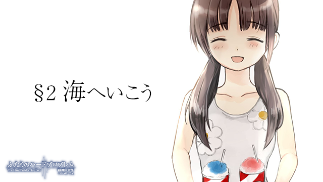

あまりの眩しさに目が覚めた。カーテン越しにぼんやりと見える太陽の輪郭。分厚い布地を突き抜けてなお力強さを失わない強烈な光の束が、外の世界の快晴を物語っていた。
（夢……か）
夏の熱線の前では、薄っぺらい安物のカーテンなど何の意味もなさない。サウナの中で汗だくになりながら走る夢を見た気がする。
「あつ……」
背中に張り付く寝間着に不快感を抱きながら、希海は誰に向けるわけでもなくぽつりとつぶやいた。のそのそと床に敷いた布団から這い出ると芳ばしい香り鼻孔をくすぐる。
「あ、おはようございます。今日は早いんですね」
調理台の前のリコがこちらを振り返った。希海は大きく口を開けてあくびをする。
「ふわぁあ、まあね。こう暑いとおちおち寝てられないわよ」
「朝ごはん、もうすぐできるんで先に顔洗ってきてください」
「はあーい」
顔を洗って部屋に戻ると机の上には朝食が並んでいた。トーストにスクランブルエッグ、そして申し訳程度のサラダ。テーブルの前に腰掛け『いただきます』をすると、希海はトーストを手に取り、耳の部分にかじりついた。サクッとした歯ごたえと、芳ばしい小麦の香り。なかなかにおいしいと思う。トーストなんて誰が焼いても同じではあるが。
「おいしいですか？」
「うん。でも毎度ながら悪いわね。私一人でパクパク食べちゃって」
机に並んだ食事は希海ひとりの分だけ。その理由はロボットであるリコには食事を摂る必要がないからだ。彼女のエネルギー源は電力そのものである。月に一度キャパシタを充電してやればあとは水だけで生きていける。
「大丈夫ですよ。それにこの間、晩ご飯食べちゃいましたし」
だが電力をエネルギー源としているということは、彼女が食事を摂れないということを意味しているわけではない。食物からエネルギーを得ていないというだけで、リコも一応は物を食べることができるし、大雑把ながら味覚も実装されている。ただ、消化系の実現には困難が多く、現状、食べたものは体内のダストパンで防腐液に沈めておくしかないのだ。このダストパンは月一のメンテナンス時に清掃されるのだが、それまではずっと食べたものが体の中に残ったままである。よって容積の関係上、リコは月に三回程度しか食事を摂ることができない。
しかし当のリコはそんな設計者の思惑などどこ吹く風いった感じで、トーストをかじる希海の姿を嬉しそうに眺めてはにこにこと微笑んでいた。
（食べにくい……）
希海は、物を食べているところを人に見られるのが苦手だ。別段行儀の悪い食べ方をしているわけではないのだが、誰かから見られていると『食べ物を口に入れて咀嚼し、飲み込む』という過程が物凄く汚らしいことであるかのような気がしてしまう。何せ、自分の体内に異物を入れているのだ。出すか入れるかの違いはあるものの、排泄やセックスの現場を見られているのとある意味で同じではないのかとすら思う。
リコの視線に耐え切れず、希海は床においてあったテレビのリモコンに手を伸ばした。ボタンを押すと少し遅れて液晶に火が灯り、画面に朝のワイドショーが映し出される。
『なるほど。では柿木選手の考える理想のプレーとはどのようなものですか？』
どうやら人気スポーツ選手の特集が組まれているようだった。スポーツ観戦に興味がない希海でさえ、見たことのある顔だ。たしか、この間の国際試合で活躍したとか何とか。
『そうですね。これまでの僕のサッカー人生は、行き詰まりの連続でした。怪我をしたり、思うような結果が残せなかったり。とにかく、色々な辛いことがありましたけど、それでも僕は頑張ろ、自分ならやれる、とどんなときでも前向きに努力を続けてきました。やっぱり努力って人間にとって一番大切なものだと思うんですよ。運がなくても才能がなくても、努力だけは誰だってできますからね。僕はプレーを通じてそういうことの大切さを――
チャンネルを変えた。
「あっ、変えちゃダメですよ。私ちょっと興味あるんですから」
「ごめん私ああいうの無理、生理的に無理」
希海はリモコンを片手にせわしなくチャンネルを回していく。だが民放はどこも下世話な芸能ニュースばかりで中々チャンネルが定まらない。
「ああもう、これでいいや」
結局、国営放送にチャンネルを固定した。地味な芸能人が地味な観光地を歩いて回るだけの、毒にも薬にもならないような旅番組。
「はぁ〜。地上波はホント下らないわねえ。衛星放送とかに加入してればこういうときに便利なんだろうなあ」
「入らないんですか？ 衛星放送」
「アパート自体が加入してないからなあ……。管理人さんに頼むのも何だか気が引けるし」
希海は皿に残ったスクランブルエッグを箸でひとつまみして口に放り込む。
「ごちそうさま」
「おいしかったですか？」
リコの料理の腕はまずまずだ。驚くほど美味というわけではないが、及第点は十分に与えられる出来だろう。だが、問題はそこではない。
「さすがに毎朝卵料理は飽きてきた……かも」
「う゛っ……」
現在、リコが作れる料理のレパートリーは非常に数が少ない。朝はスクランブルエッグと目玉焼きのみ。昼夕はチャーハン・カレー・パスタと他にいくつか、と言ったところだ。リコの方もそれは重々承知しているのか、肩をすくめて申し訳なさそうにしている。
「だ、だって……。希海さんから教えてもらったレシピって、これくらいしかないんですもん……」
希海の家に来たときのリコは何一つ料理ができない状況だった。かつてのリコは料理もそこそこに出来たようなので、おそらく記憶と一緒に覚えたレシピもどこかへ飛んでしまったのだろう。今現在リコが作れる料理はすべて希海が教えたものである。
（結局、私に返ってくるのか……）
希海はひとつため息をついた。リコの拙さは自らの拙さの裏返しだ。
「……ごめんなさい」
「ん？ ああ、謝んなくていいって。今度また別の料理教えてあげるからさ。ほら、顔あげて」
とは言っても、もともと惣菜やレトルトで済ませることが多かった希海だ。知っているレシピは既にすべて教えてしまった。かくなる上は、東に金を出させて料理教室にでも通ってやろうか。
（ん？ そういえば地区センターに料理教室があったような……）
「……どうしたんですか？」
何かを思いついたのが傍目にも分かったのか、リコは不思議そうな顔で見上げてくる。希海は口の端を釣り上げた不敵な笑みを浮かべると、高らかにこう宣言した。
「よしっ、今日は出掛けるわよ！」